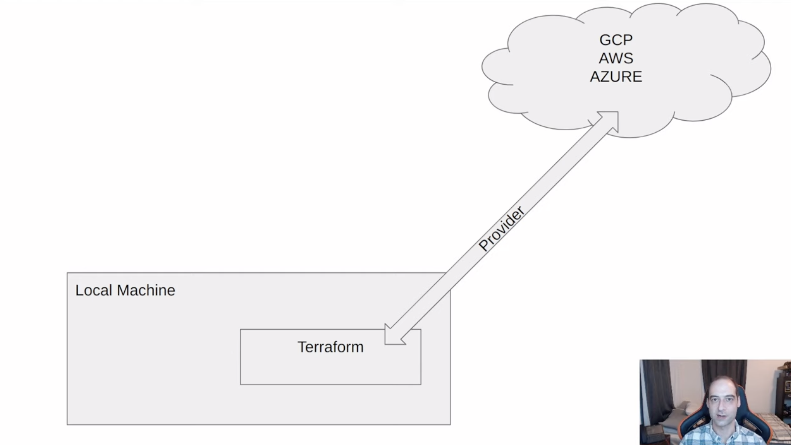
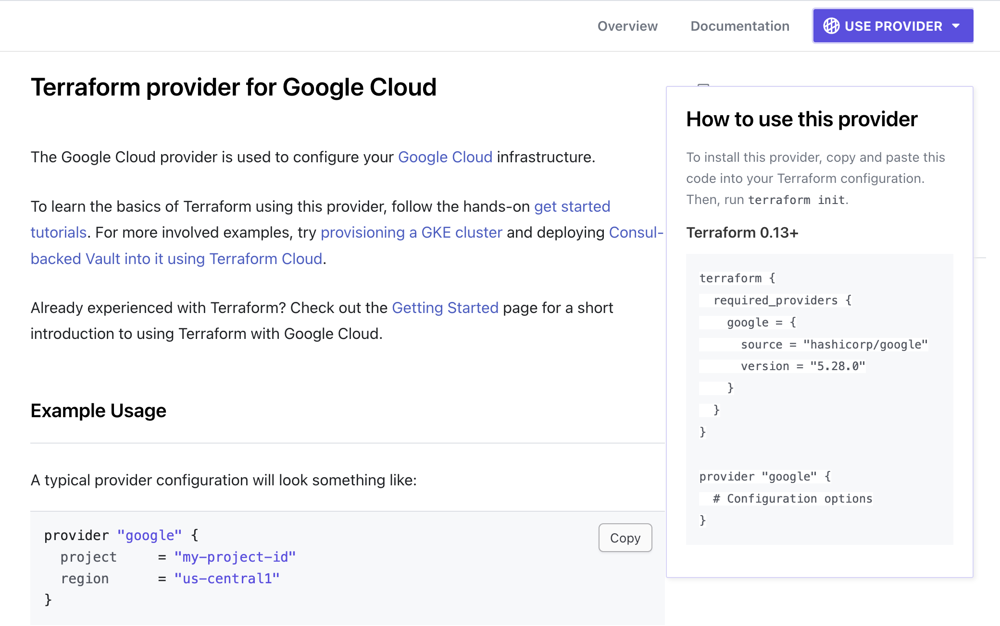
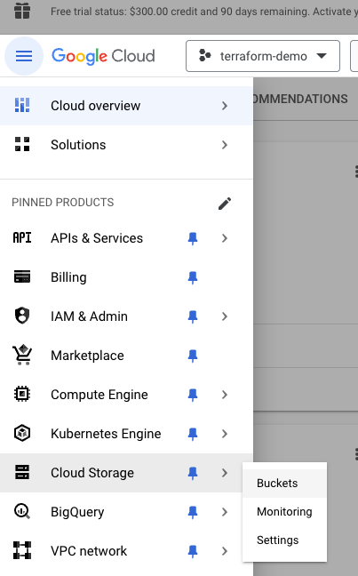
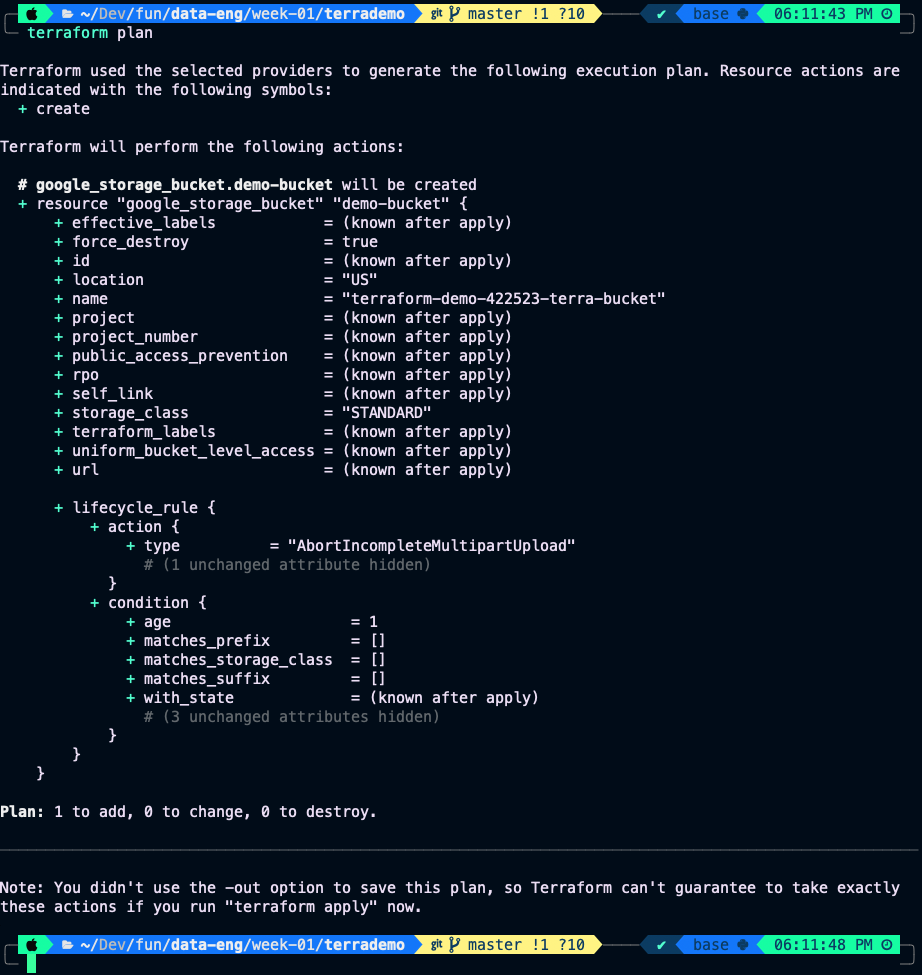
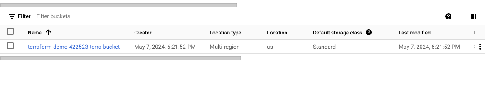

Terraform
Terminology
Terraform: is an infrastructure as code tool that lets you build, change, and version cloud and on-prem resources safely and efficiently.Infrastructure as Code (IaC): is the managing and provisioning of infrastructure through code instead of through manual processes.
Useful links
What is Terraform?
Terraform is an infrastructure as code tool that lets you build, change, and version cloud and on-prem resources safely and efficiently.
Why Terraform:
- Simplicity in keeping track of infraestructure.
- Easier collaboration.
- Reproducibility.
- Ensure resources are removed.
How Terraform works?

What are providers?
Code that allows terraform to communicate to manage resources on, for example:
- AWS
- Azure
- GCP
- Kubernetes
- etc.
Key Terraform Commands
terraform init:- Initializes & configures the backend, installs plugins/providers, & checks out an existing configuration from a version control.
terraform plan:- Matches/previews local changes against a remote state, and proposes an Execution Plan.
terraform apply:- Asks for approval to the proposed plan, and applies changes to cloud.
terraform destroy:- Removes your stack from the Cloud.
Creating main.tf file
You can go and google terraform google provider click in the first link and copy the use provider code:

then in the brackets of provider "google" put the example usage code.
One nice trick is that you can type in the terminal:
terraform fmtto get your main.tf file formatted. Now you can copy and paste your project-id on project.
Initializing terraform
Now, we need a way to tell terraform how to use our credentials, for this we can do something like:
export GOOGLE_CREDENTIALS='/Users/manuelandersen/Developer/fun/data-eng/week-01/terrademo/keys/my-creds.json'you can check this by doing:
echo $GOOGLE_CREDENTIALSNow we can run:
terraform initto get the provider, here:
- provider means the piece of code that terraform is going tou use to talk to GCP.
Our JSON credential files gives us acces to the resources, the provider will be the "PATH".
More intuitively, the provider gets us to the door, and our JSON credential files opens the door.
Creating a storage bucket on GCP
First you go to:

and you can see that we dont have any bucket:

So, if you type in google terraform google cloud storage bucket you can acces this link where we can copy and paste the example:
resource "google_storage_bucket" "auto-expire" {
name = "auto-expiring-bucket"
location = "US"
force_destroy = true
lifecycle_rule {
condition {
age = 1
}
action {
type = "AbortIncompleteMultipartUpload"
}
}
}Now we can run a:
terraform planand we should get something like this:

And now we can deploy this with:
terraform applyit will ask for your approval, you type yes, and then it will create a JSON file in your directory with the bucket. And if we look at our Cloud Strage Buckets we will see that it was created:

We will use this in a project or whatever. Now we can get rid of this with:
terraform destroyAnd,
use terraform .gitignore if you are pushin code to github.
Big Query Dataset
So, lets make some more interesting, like a Big Query Dataset. For this we need to add to our main.tf the next lines:
resource "google_bigquery_dataset" "demo_dataset" {
dataset_id = "demo_dataset"
}here:
google_bigquery_datasetis the resource.demo_datasetis the name we give to the resource within the terraform files.
Using variables
By convention we would use a file called variables.tf for our variables.
We define in our variables.tf the next variables:
variable "project" {
description = "Project"
default = "terraform-demo-422523"
}
variable "region" {
description = "Region location"
default = "us-central1"
}
variable "location" {
description = "Project Location"
default = "US"
}
variable "bq_dataset_name" {
description = "My BigQuery Dataset Name"
default = "demo_dataset"
}
variable "cgs_bucket_name" {
description = "My Storage Bucket Name"
default = "terraform-demo-422523-terra-bucket"
}
variable "gcs_storage_class" {
description = "Bucket Storage Class"
default = "STANDARD"
}so in our main.tf we can write:
terraform {
required_providers {
google = {
source = "hashicorp/google"
version = "5.28.0"
}
}
}
provider "google" {
project = "terraform-demo-422523"
region = var.location
}
resource "google_storage_bucket" "demo-bucket" {
name = var.cgs_bucket_name
location = var.region
force_destroy = true
lifecycle_rule {
condition {
age = 1
}
action {
type = "AbortIncompleteMultipartUpload"
}
}
}
resource "google_bigquery_dataset" "demo_dataset" {
dataset_id = var.bq_dataset_name
location = var.location
}this is way better if we are working in this project with other people and we want to quickly change the value of some variable.
Changing the acces to credentials
Remember that we declare the GOOGLE_CREDENTIALS by exporting them, so to unset them we do:
unset GOOGLE_CREDENTIALSso now if we do terraform plan it should fail. Now we can put the credentials in a variable in our variables.tf file:
variable "credentials" {
description = "My Credentials"
default = file("./keys/my-creds.json")
}we also need to include this variable in our main.tf file this way, with a function called file():
variable "credentials" {
description = file(var.credentials)
default = file("./keys/my-creds.json")
}Always remember to do:
terraform destroy